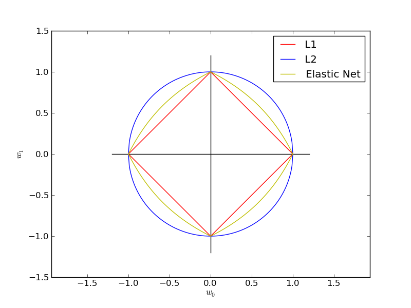

SGD: Penalties¶
Plot the contours of the three penalties supported by scikits.learn.linear_model.stochastic_gradient.
Python source code: plot_sgd_penalties.py
from __future__ import division
print __doc__
import numpy as np
import pylab as pl
def l1(xs): return np.array([np.sqrt((1 - np.sqrt(x**2.0))**2.0) for x in xs])
def l2(xs): return np.array([np.sqrt(1.0-x**2.0) for x in xs])
def el(xs, z):
return np.array([(2 - 2*x - 2*z + 4*x*z -
(4*z**2 - 8*x*z**2 + 8*x**2*z**2 -
16*x**2*z**3 + 8*x*z**3 + 4*x**2*z**4)**(1/2) -
2*x*z**2)/(2 - 4*z) for x in xs])
def cross(ext):
pl.plot([-ext,ext],[0,0], "k-")
pl.plot([0,0], [-ext,ext], "k-")
xs = np.linspace(0, 1, 100)
alpha = 0.501 # 0.5 division throuh zero
cross(1.2)
pl.plot(xs, l1(xs), "r-", label="L1")
pl.plot(xs, -1.0*l1(xs), "r-")
pl.plot(-1*xs, l1(xs), "r-")
pl.plot(-1*xs, -1.0*l1(xs), "r-")
pl.plot(xs, l2(xs), "b-", label="L2")
pl.plot(xs, -1.0 * l2(xs), "b-")
pl.plot(-1*xs, l2(xs), "b-")
pl.plot(-1*xs, -1.0 * l2(xs), "b-")
pl.plot(xs, el(xs, alpha), "y-", label="Elastic Net")
pl.plot(xs, -1.0 * el(xs, alpha), "y-")
pl.plot(-1*xs, el(xs, alpha), "y-")
pl.plot(-1*xs, -1.0 * el(xs, alpha), "y-")
pl.xlabel(r"$w_0$")
pl.ylabel(r"$w_1$")
pl.legend()
pl.axis("equal")
pl.show()